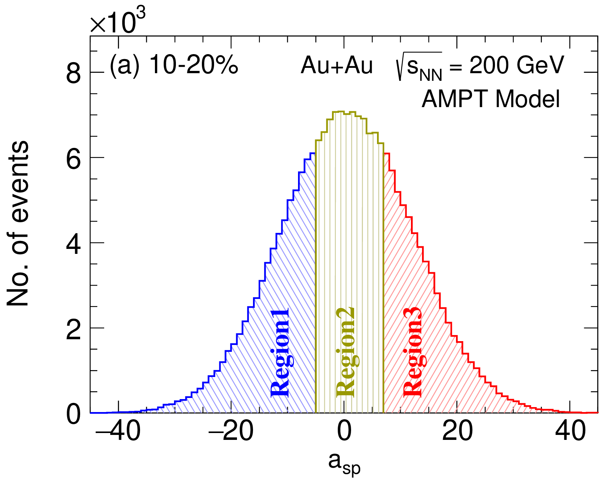
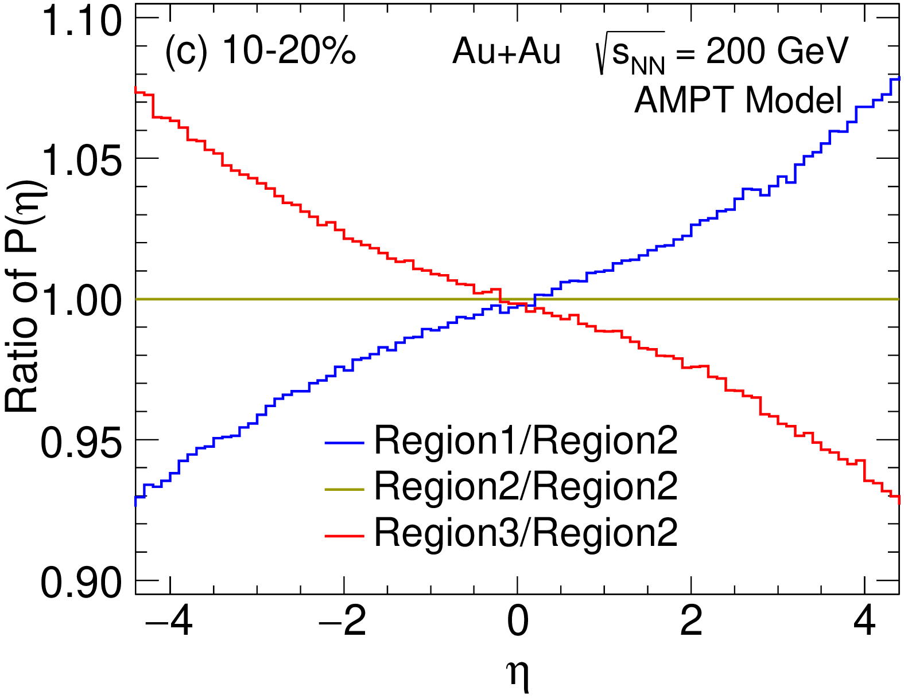
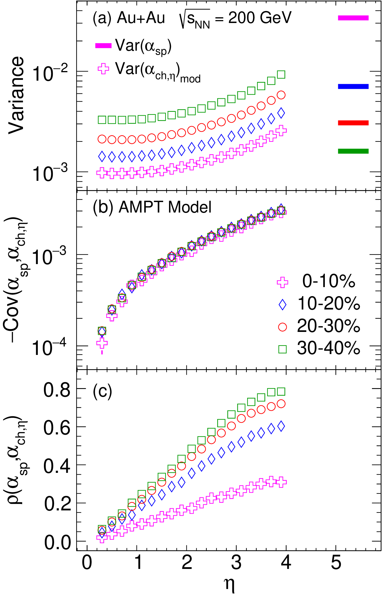
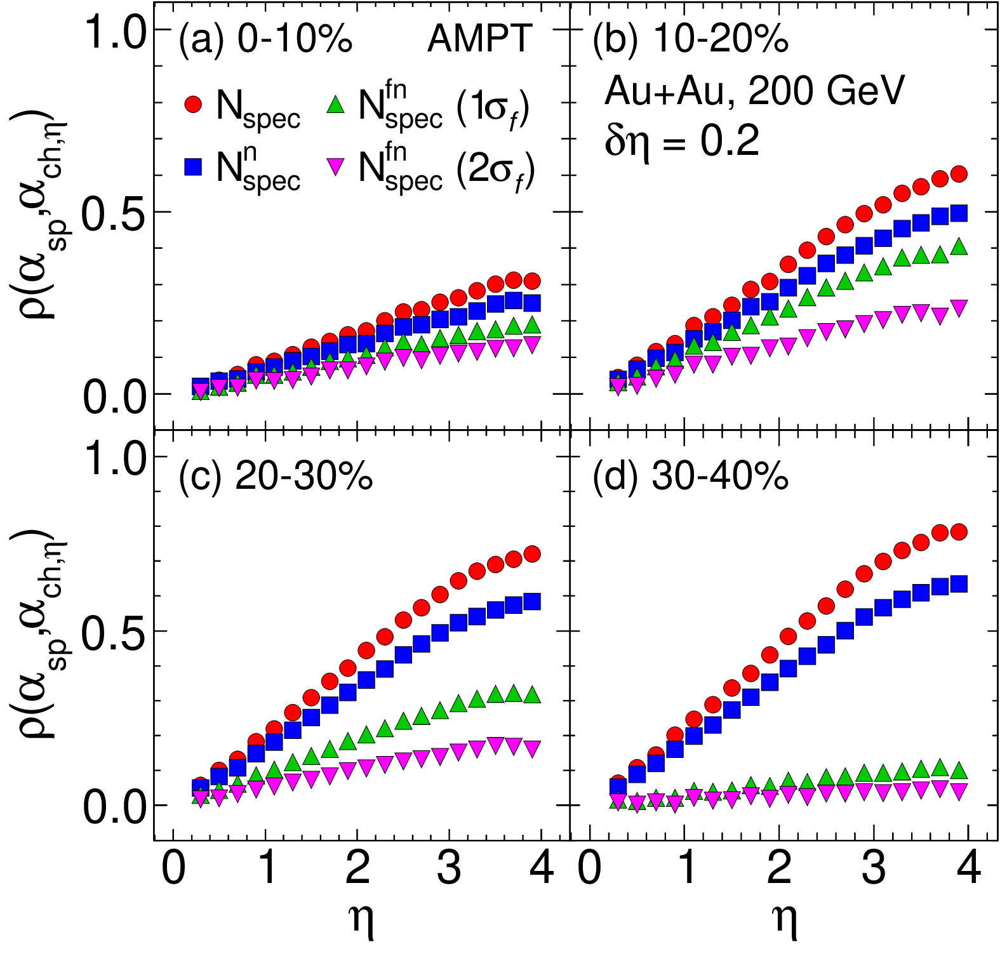

Do particles remember which nucleus they came from?
Method to constrain preferential emission and spectator dynamics in heavy-ion collisions
V. Bairathi and S. Bhatta, Phys. Rev. C 113, 024917 (2026)
My role: corresponding author.
In one paragraph
In a collision of two nuclei, each colliding nucleon sends more particles along its own direction of motion. If one nucleus contributes more nucleons, particle production tilts toward its side. We propose a way to measure this at colliders: correlate the imbalance of leftover "spectator" nucleons, counted by forward calorimeters, with the forward–backward imbalance of produced particles.
1The gap: the long axis of the collision is poorly constrained
How particles spread along the beam direction (in pseudorapidity η) is shaped by two effects. Preferential emission: each participating nucleon emits more particles along its own direction of motion. Spectator breakup: the nucleons that miss the collision form hot remnants that evaporate and fragment near the beam direction.
2What we compute: a spectator–particle correlation
The spectators that fly on down the beam are counted by zero-degree calorimeters (ZDCs) on each side. Fewer spectators on one side means more participants from that nucleus, so more particles should appear on that side.
For every event we form two normalized imbalances: the spectator asymmetry from the two ZDCs, and the particle asymmetry between two narrow windows at +η and −η. Their Pearson correlation, ρ, is measured as a function of η. Normalizing makes detector efficiencies cancel, and a rescaled variance makes ρ independent of the window width.
3What we observe: a clean, η-odd signal that is sensitive to spectator breakup
We tested the method on Au+Au collisions at 200 GeV simulated with the AMPT transport model, after removing a known spurious forward–backward asymmetry in that model.




Real ZDCs only see free neutrons: protons and charged fragments are swept away by magnets. Breakup adds extra event-by-event scatter to the measured spectator count, which lowers ρ. We modelled this with a parameterization based on PHENIX measurements.

4What we conclude
- A direct probe of preferential emission: ρ is an η-differential, data-driven measure built only from quantities that collider experiments record.
- Robust: it is insensitive to detector efficiency and to the η window width.
- A handle on spectator breakup: if data show a smaller ρ than models without breakup, the difference constrains how strongly spectator remnants evaporate and fragment.
5What comes next
- Measure it: a program at RHIC and the LHC using ZDCs and forward detectors.
- From SPS to colliders: test how longitudinal stopping changes with energy, from the "mixing" seen at the SPS toward more transparency.
- Broaden it: other energies, collision systems and identified hadrons, for an η-resolved picture of particle production.
All plots on this page are reproduced from that paper under CC BY 4.0. Animations are simplified illustrations made for this page, not results of the paper.